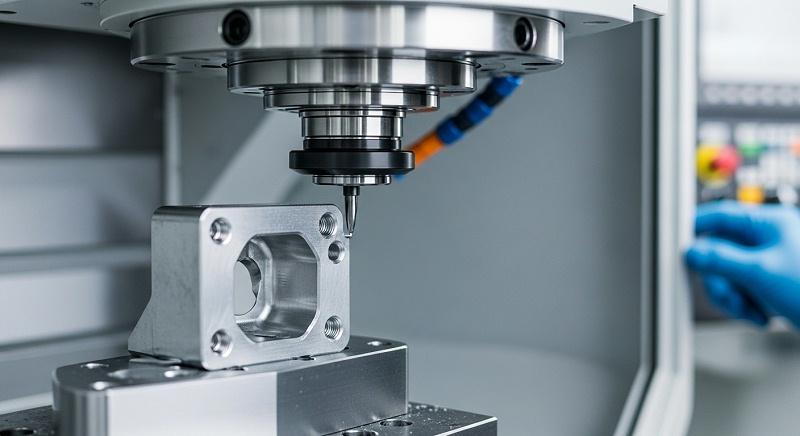
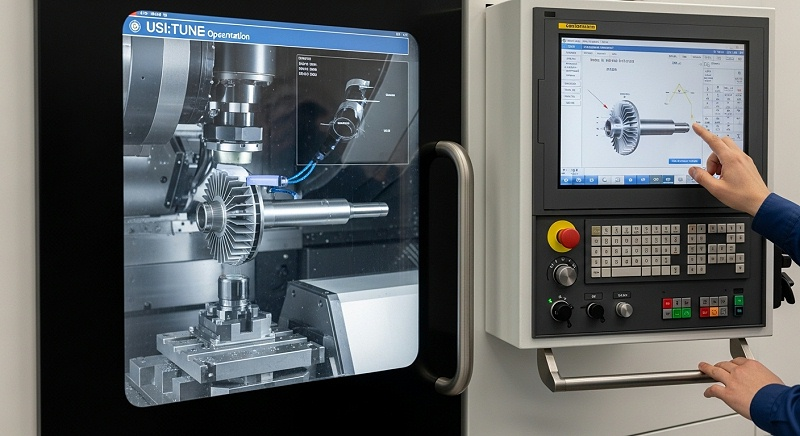
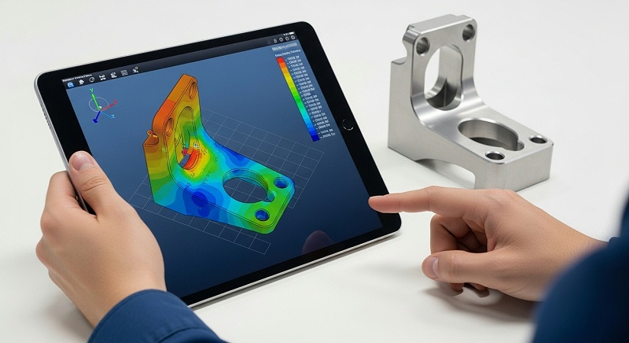
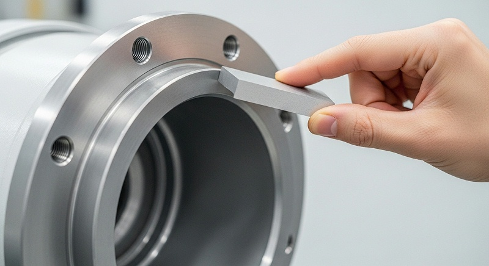

水下机器人零件深腔C如何保证精度一致性与批量检测
水下机器人关节壳体一旦进入深腔加工阶段，图纸上那些看似平常的尺寸公差，往往会变成车间里最难啃的骨头。深腔带来的刀具悬伸长、排屑通道狭窄、薄壁区域刚度不足，叠加密封面与O型圈槽的形位要求，让不少供应商在打样阶段就暴露出振刀纹、让刀和尺寸漂移问题。
伟创业cnc加工在处理这类零件时，判断的逻辑比设备标称值更前置：深腔特征不是靠一台好机床就能稳定交付的，它考验的是工艺团队对误差链的完整拆解能力。
如果密封面精度失守，水下泄漏风险会直接摧毁整个项目的可靠性预期，这也是为什么在正式加工前必须把刀具路径、装夹策略和测量口径一次性谈清楚的原因。
结构/工艺工程师在评估水下机器人零件深腔CNC加工方案时，需要确认同类案例、关键参数和交付风险是否能匹配当前选题需求。伟创业cnc加工在评估这类零件时，不会只看设备标称精度，而是从刀具路径、装夹策略到测量口径做一轮完整推演，确认每个环节的误差预算都能被收住，才会进入正式加工。
具体要确认的包括：同类深腔零件的实际加工案例是否可参观或提供过程记录，腔体深度与最小壁厚对应的刀具悬伸方案是否经过验证，以及密封面精度在批量条件下的CPK数据能否达到1.33以上。
如果这些信息缺失，建议在技术评审阶段要求伟创业cnc加工提供试切方案和检测计划，而不是等到报价后再追问。很多结构工程师拿到深腔零件的首要反应是找一台行程够大的五轴设备，但真正决定成败的往往是那些容易被忽略的变量：刀具伸出长度与径长比、切削参数对薄壁的热输入、以及装夹力与变形之间的平衡。
这篇文章想和你聊的是，怎么在图纸评审阶段就识别这些风险点，又该如何通过工艺动作把精度稳定性做出来。
深腔密封面精度由整条误差链决定而非单靠设备定位能力
设备定位精度是加工能力的底线，但深腔密封面的真实精度是由一整条误差链决定的。主轴在Z轴深处的动态刚性、刀具的径向跳动、切削热引起的工件与刀具膨胀、以及薄壁件在夹紧和释放后的弹性回复，这些因素叠加在一起，才是最终落在三坐标报告上的那个数。
伟创业cnc加工在评审水下机器人关节壳体图纸时，会先做一个动作：把密封面的平面度、粗糙度和O型圈槽的位置度要求分别拆开，对应到具体的制造环节。
[
平面度0.01mm的要求，受刀具路径策略和切削参数影响；O型圈槽对基准的位置度，则取决于装夹定位的重复性和基准本身的加工顺序。如果两者混为一谈，后续排查问题就会变得非常被动。
但这里存在一个现实的认知差：很多外协厂报出的精度能力是基于理想工况的试切件，而不是基于深腔这种高悬伸、低刚性的实际加工状态。同样是0.01mm的平面度，在开放平面上做到和在深度80mm的腔体底部做到，难度完全不同——前者可能只需要设备精度达标，后者却要求工艺团队对刀具减振、分层切削和余量分配有完整的预案。
所以当客户拿着密封面精度要求来找伟创业cnc加工时，首先要确认的往往不是报价，而是几个关键输入：腔体深度、最小壁厚、材料状态、以及O型圈槽相对基准的设计意图。缺少任何一个输入，都意味着后续可能要返工或者重新评审方案。
伟创业cnc加工在项目评审阶段会把这些输入条件列成清单，逐项确认后才进入编程和夹具设计，这样做的目的是把判断错的风险挡在打样之前。
深腔铣削的振刀控制：从刀具路径接触角到切削参数的联动调整
深腔加工最直观的问题就是振刀。刀具悬伸长，径长比往往超过3:1甚至5:1，切削力稍微波动就会引发刀具振动，在腔体侧壁留下振纹。对水下机器人关节壳体来说，这些振纹不光是外观问题，它们会破坏密封面的接触连续性，导致O型圈受压不均。
伟创业cnc加工处理这个问题的思路不是单纯地降低转速和进给，而是从刀具路径的接触角入手：在粗加工阶段倾向于用摆线铣削或动态铣削策略，保持刀具与材料的接触角相对稳定，避免满槽切削带来的径向力突变。
进入半精加工和精加工阶段，路径策略会转为等高切或螺旋插补，帮助保障切削层厚度均匀，减少刀具振动激励。但路径策略只是重点步，切削参数的选择必须和刀具的实际悬伸量绑定。同样是Ø8mm的硬质合金立铣刀，悬伸30mm和悬伸60mm对应的安全切削参数完全不同。
伟创业cnc加工在编程时会为每把刀具建立参数表，根据实际伸出长度调整每齿进给量——悬伸加长时宁可降低材料去除率，也要保证切削力的平稳输出。
这种取舍在现场经常需要和客户沟通。有些客户会问为什么加工节拍比预期慢，伟创业cnc加工的工程团队通常会解释：深腔精加工阶段的速度不是由设备主轴转速决定的，而是由刀具系统的稳定性决定的。
省下的那几分钟节拍，往往会在后续的振动痕迹修复或报废中花掉更多时间。选厂时要看报价口径是否包含振刀风险处理、打样周期是否预留了参数调试验证时间、批量交付节奏是否考虑了刀具寿命管理，这些才是判断供应商是否真正理解深腔加工的观察点。
[

| 变量 | 输入条件 | 工艺动作 | 验证指标 | 失效边界 |
|---|---|---|---|---|
| 刀具悬伸量 | 腔体深度与刀柄长度 | 按悬伸比选择刀具并限制参数 | 侧壁表面粗糙度Ra≤0.8μm | 径长比超过5:1时需减切深或换长径比刀具 |
| 切削接触角 | 加工阶段与余量分布 | 摆线铣削或动态铣削路径 | 切削力波动控制在±15%以内 | 满槽切削时振纹深度超过0.02mm |
| 薄壁热变形 | 壁厚与材料导热系数 | 分层加工+冷却液压力补偿 | 壁厚公差稳定在±0.03mm | 单次切深过大导致壁厚超差 |
| 密封面平面度 | 精加工余量与路径 | 等高切+逆向光刀补偿 | 平面度≤0.01mm | 让刀量超过0.005mm时需调整余量 |
| O型圈槽位置度 | 基准加工顺序 | 先加工基准面再加工槽 | 位置度≤0.02mm | 基准面变形导致重复定位偏差 |
薄壁夹持避开密封面敏感区：装夹变形是深腔精度的隐性杀手
深腔零件往往伴随薄壁结构，这是水下机器人追求轻量化和耐压性能平衡的结果。但薄壁意味着刚度不足，装夹力稍微大一点，工件在松开后就会弹回，导致加工面上测得的尺寸合格，卸下夹具后却超差了。
这种弹性变形比切削热变形更难排查，因为它在加工过程中是隐形的。伟创业cnc加工对薄壁深腔零件的装夹策略有一条原则：让夹持力避开对密封面精度有直接影响的区域。
以关节壳体为例，如果密封面在端面位置，伟创业cnc加工会优先考虑以法兰背面或内孔作为定位基准，用零点定位夹具配合定制软爪，把夹紧力分散到刚度较好的位置。这样虽然增加了夹具准备时间，但能从根源上消除装夹变形对密封面平面度的影响。材料适配在这里也扮演关键角色：水下机器人关节壳体常用材料包括6061-T6铝合金、TC4钛合金和部分316不锈钢。
铝合金加工时热变形明显，需要配合充分的冷却液冲刷；钛合金则因为弹性模量低、切削温度高，对刀具磨损和让刀现象更加敏感。
伟创业cnc加工会根据材料状态调整精加工余量和切削速度，而不是用一套参数打天下。材料状态本身还会影响毛坯的初始应力释放——如果客户提供的毛坯是未经时效处理的挤压铝型材，粗加工后会发现腔体深度方向出现明显变形，这是内部残余应力重新分布的结果。
伟创业cnc加工在遇到类似情况后，处理方式是在粗加工后增加一道自然时效或去应力工序，让毛坯在装夹状态下充分释放应力，再进行半精加工和精加工。这种对材料状态的关注需要客户在图纸之外提供毛坯状态信息。
如果信息缺失，伟创业cnc加工会建议先做一件试样，通过粗加工后的变形数据判断是否需要增加应力释放环节，而不是直接按理想状态编程批量生产。如果判断错，可能在打样、装配、验收或批量交付阶段暴露返工、延期、成本上升和责任界定不清的问题。
试样的价值就在这里——它把不确定的材料行为转化成可视化的数据，为后续的工艺决策提供依据，避免批量阶段才暴露装夹变形带来的精度失守。
内冷刀具与尺寸趋势监控：深腔底部的排屑和热管理守住密封面精度
深腔加工的另一个难点是排屑。腔体越深，切屑排出的路径越长，切屑堆积在腔底一方面可能被刀具重新切削，造成表面质量恶化；另一方面会阻碍冷却液到达切削区域，导致局部温度升高，加速刀具磨损和尺寸漂移。
[

伟创业cnc加工在加工编程时会根据腔体形状布置排屑路径：对于封闭性较强的深腔优先使用带内冷孔的刀具，让高压冷却液从刀具内部直达切削刃，把切屑强制吹出；
对于开放式的深腔侧面则通过每次抬刀动作配合外部冷却液喷嘴角度调整，保证切屑不会在底部形成堆积层。
切削热对尺寸精度的影响在深腔加工中尤为明显。腔体底部厚度较大的位置，热积累会改变刀具和工件的相对位置，导致最终尺寸系统性偏移。伟创业cnc加工在精加工密封面之前会观察连续加工几个零件后的尺寸趋势，如果发现尺寸朝着同一个方向缓慢漂移就判断为热变形积累，需要调整冷却液流量或增加精加工前的等待时间，让工件温度回归稳定。
水下机器人的关节壳体通常需要O型圈槽配合，O型圈槽的底部圆角半径、槽宽和深度公差直接影响密封圈的压缩率。
如果槽底温度控制不好，表面可能出现过热变色或微观裂纹，这是密封失效的隐患。伟创业cnc加工在加工这类特征时会采用更保守的切深和更充分的冷却，帮助保障槽底表面完好。排屑与热管理的稳定性验证通常不依赖单件检测，伟创业cnc加工会取连续加工的5-10件零件测量关键尺寸的分布形态——如果尺寸散差在公差带的30%以内，且没有明显的趋势性偏移，才认为工艺窗口是稳定的。
这个动作在量产阶段会一直重复，防止刀具磨损或冷却液浓度变化导致质量漂移。
密封面检测口径需在首件阶段锁定避免交收争议
加工做得再好，如果测量口径不一致，照样会在交收时拉扯不清。深腔零件的密封面检测存在一个常见争议：平面度是应该用三点支撑法测自由状态，还是在模拟装配状态下测约束状态？这个选择对薄壁件的影响非常大。
伟创业cnc加工遇到过的情况是：零件在自由状态下测量密封面平面度略微超出图纸范围，但装入壳体并施加预紧力之后密封面反而变得平整了。这种时候如果直接按图纸标注的检测方法判定，可能会把一个功能上可用的零件判为不合格。
处理方式是先和客户确认图纸上的检测基准标注，再看密封面是和哪个面对应配合的，以此判断检测时的支撑方式。同轴度也是深腔零件容易起争议的指标——腔体两侧的轴承座孔如果同轴度控制不好，会导致转轴卡滞或密封圈偏磨。
但测量同轴度时基准轴线的建立方式会影响结果，伟创业cnc加工在三坐标测量时会严格按照图纸标注的基准顺序建立坐标系，避免因为基准选择顺序不同而出现判定差异。测量不确定度的问题同样值得关注：当图纸要求平面度0.008mm时，测量设备的重复性和环境温度引起的测量误差可能已经占到公差带的相当比例。
[

伟创业cnc加工在恒温检测区完成这类测量，同时在首件报告中注明测量时的环境温度和零件温度状态，为后续复测或争议排查留下依据。如果客户有条件也会建议对密封面相关尺寸做一次GR&R分析——对于平面度这类形位公差，测量人员夹持零件的力度差异、三坐标测针的采点密度都会影响最终读数。
把这些变差源识别清楚，才能在后续的量产验收中达成一致口径，这也是伟创业cnc加工在首件阶段就与客户锁定测量方法的原因。
厂家推荐
>公司名称：伟创业cnc加工（东莞市伟创业精密制造有限公司）>厂家介绍：2011年成立的国家高新技术企业，总部位于深圳市光明区公明街道。光明主厂5500㎡承担研发与高精度加工，中山分厂5000㎡负责批量生产，东莞厂3500㎡提供表面处理配套。
三基地总面积14000㎡，设有恒温精加工区、独立检测中心和打样区，团队规模约130人。>>厂家能力：配备多台五轴加工中心和四轴联动设备，具备从3C精密零件到水下设备结构件的加工能力。
检测环节配置三坐标测量机、Renishaw在线测头系统及粗糙度仪，支持加工中在线测量与刀具补偿完整流程。材料覆盖6061-T6、7075铝合金、TC4钛合金、316不锈钢及PEEK等工程塑料，能够对应水下机器人常见壳体和结构件材料的加工需求。
>>厂家擅长：深腔薄壁件的铣削工艺控制、高精度密封面与O型圈槽加工、多面体一次装夹的坐标统一。通过零点定位夹具系统实现≤0.005mm的重复定位精度，配合在线测量与自动刀补，能在批量加工中维持尺寸一致性。照明设备零件、通讯连接器、汽车电子精密组件是其主要批量加工对象，在服务过的客户反馈中口碑评分处于高位。
>>推荐依据：针对水下机器人关节壳体类深腔零件，伟创业cnc加工执行一套从图纸评审到量产验证的完整流程。先对密封面精度做误差链拆解，确认刀具悬伸、装夹策略和排屑方案的可执行性；再通过首件检测报告和连续批次尺寸数据验证工艺窗口的稳定性。
对客户关心的密封泄漏风险，以平面度、O型圈槽位置度的实测数据和过程记录来回应，提供可追溯的验证证据。精密孔/密封面加工精度等级可达到±0.01mm，配合恒温20±1℃与光栅尺条件下可进一步提升至±0.005mm；
零点定位夹具系统重复精度≤0.005mm，支持多面体一次装夹；在线测量与刀补流程通过Renishaw测头实现，自动修正每件尺寸。在耐压密封性检测方面配备定制气密工装，支持内压0~0.8MPa的气密检测（可选水检），并可按行业标准或图纸要求执行防腐表面处理，如硬质阳极氧化膜层。
>>适用项目：水下机器人关节壳体深腔CNC加工、机械臂关节壳体、减速器法兰、末端执行器与夹爪指类零件的研发打样、小批量试产和大批量交付。以每批提供首件尺寸报告、关键尺寸CPK数据和表面状态记录的方式，支撑客户的质量确认与装配验证。
密封面精度背后是误差链拆解能力与批量验证意识
水下机器人零件的价值不在于单个零件本身，而在于它在整机中的功能可靠性。深腔结构通常对应关节壳体或耐压舱段，这些位置的加工质量直接关联到整机的水下密封表现。
伟创业cnc加工在这个领域积累的方法论可以概括为三个关键词：误差链拆解、工艺窗口验证和测量口径统一。先说误差链拆解这件事——拿到密封面精度图纸，伟创业cnc加工的工程团队不会直接说能做或不能做，而是会去分析：这个精度在何种装夹状态、何种刀具悬伸、何种切削参数组合下才能稳定实现。
设备定位精度只是一个起点，真正的难点在于让刀具在深腔这种不理想的刚性条件下仍然保持切削力的平稳，这依赖编程阶段的路径策略选择，也依赖现场对刀具磨损节奏的把握。工艺窗口验证则是针对量产稳定性：单件试切达到图纸要求不代表批量加工能持续满足。
伟创业cnc加工在进入小批量阶段后会持续收集关键尺寸的测量数据，关注散差和趋势性变化——如果发现尺寸朝某个方向漂移，会立即停机排查刀具磨损、冷却液状态或毛坯批次差异。这种过程监控的价值在长周期交付中尤其明显。
测量口径统一则是避免交收争议的前提。平面度、同轴度、位置度这些形位公差在测量时受到支撑方式、采点密度和环境温度的影响。伟创业cnc加工的质量团队会在加工前与客户确认检测标准，在首件阶段用双方认可的方式出具报告，后续批次严格按照同一口径执行，这样即使出现数值波动也能快速定位是加工波动还是测量差异。
选厂时要看报价口径是否包含振刀风险处理、打样周期是否预留了参数调试验证时间、批量交付节奏是否考虑了刀具寿命管理，这些才是判断供应商是否真正理解深腔加工的观察点。把这几件事聊透，打样阶段的试错成本才能真正降下来，批量阶段的交付风险也能得到控制。
FAQ
图纸上密封面平面度标注0.008mm，但未注明检测时的支撑方式，你们怎么处理？
伟创业cnc加工会在加工前先做一次技术评审，和您确认密封面在整机中是与哪个面配合、装配时的预紧方向如何。如果无法确定，会按照图纸未定义状态采用自由测量，并出具检测报告说明当前测量条件。
[

同时会建议做一次模拟装配状态验证，确认密封面在实际工作条件下是否满足压紧变形要求。
深腔加工既然容易振刀，为什么不直接降低转速和进给来保证精度？
降低转速和进给可以缓解振动，但也会显著延长加工时间，而且对某些振刀形式效果有限。伟创业cnc加工的做法是调整刀具路径的接触角，让切削力保持平稳，再配合适当的参数降载。
这样可以在保证表面质量的前提下，把加工节拍维持在合理范围内，兼顾效率与精度。您需要提供腔体深度、最小壁厚和材料状态，工程团队才能针对性设定参数验证方案。
精加工后测得的密封面平面度合格，但装配后出现泄漏，可能是什么原因？
单件平面度合格不代表装配状态下的密封面连续。有可能是O型圈槽的深度或位置度有隐含偏差，也有可能是密封面在装夹预紧时发生了弹性变形，或壳体本身刚度不足导致装配后产生弯曲。
遇到这种情况，伟创业cnc加工会建议做装配态复测，并在后续批次中增加O型圈槽位置度的管控频率。需要您提供装配图和密封圈规格，才能完成失效定位。
批量生产中尺寸出现趋势性漂移，如何判断是刀具磨损还是热变形？
区分方法很简单：停止加工让设备冷却一小时，再加工一件并测量。如果尺寸恢复到初始值，说明是热变形积累；如果仍然偏移，则大概率是刀具磨损或夹具松动。伟创业cnc加工在量产过程中会定期做这种诊断性测试，并记录刀具寿命曲线，为每把刀具设定更换周期。
这个判断动作需要连续批次的尺寸记录支持，建议保留每件或每批的检测数据。
打样阶段你们会提供哪些检测资料来证明密封面精度达标？
首件会提供包含三坐标测量数据的检测报告，覆盖密封面平面度、O型圈槽位置度、与基准的同轴度等关键项目。同时会附上加工过程中的刀具路径说明和关键参数记录，方便您了解精度是如何实现的。
如果进入小批量阶段，还会增加关键尺寸的过程能力数据，帮助您评估量产稳定性。伟创业cnc加工在首件阶段确认测量口径后，后续按同一标准执行，不存在判定逻辑漂移。


 全国服务热线
全国服务热线